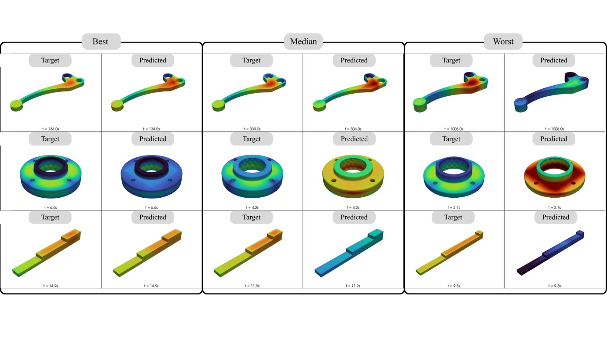
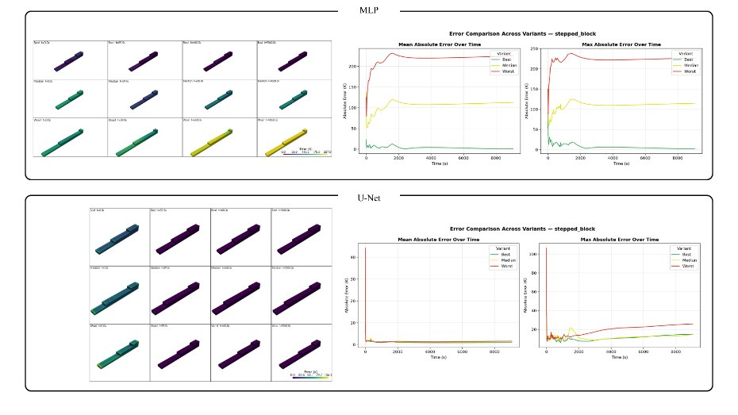

In heat transfer class we write the conduction equation once and then spend weeks on what it implies: heat flows from hot to cold, and what happens at a point depends on what is happening around it. That second idea is the whole reason this benchmark exists.
Once LM6-CastBench was ready, we wanted to test a simple question. If you give a neural network the coordinates of a point, the pouring and mould temperatures and the time, can it predict the temperature at that point? Or does it need to see the shape around that point to do it properly?
The physics we are asking the models to learn
Inside the casting, the simulation solves the enthalpy-based heat equation, where the effective heat capacity also carries the latent heat released during solidification:
At the casting–mould boundary there is a temperature-dependent convective condition. None of this is given to the networks. They only see examples of inputs and the resulting temperature fields.
Two models, two views of the part
Point-wise MLP: every node on its own
The MLP takes seven numbers for each mesh node: X, Y, Z, the signed distance to the surface, Tpour, Tmould and time. It passes them through three hidden layers (128, 128, 64 neurons, about 26 k parameters) and outputs one temperature. It never sees the node next door. It works directly at the exact node positions, which is an advantage we will come back to.
3D U-Net: the whole neighbourhood at once
The U-Net works on a 32 × 32 × 32 voxel grid. Its input channels are occupancy, signed distance, Tpour, Tmould and time, and it outputs the full 3D temperature field, which we map back to the FEM nodes for evaluation. With three down-sampling stages, a bottleneck and skip connections at every level, it has about 1.4 M parameters. Every prediction is made with the surrounding geometry in view.
| Point-wise MLP | 3D U-Net | |
|---|---|---|
| Representation | FEM nodes | 32³ voxel grid |
| Input | X, Y, Z, SDF, Tpour, Tmould, t | Occupancy, SDF, Tpour, Tmould, t |
| Output | Nodal temperature | 3D temperature field |
| Parameters | 25,857 | 1,402,289 |
Both were trained with MSE loss and Adam (learning rate 10−3, 50 epochs) on a Kaggle T4, and both were tested on the same held-out geometry variants, parts the networks had never seen.
The results
Here is the mean absolute temperature error on the unseen geometries. Lower is better.
On the brake lever the improvement is modest. On the flange and the stepped block it is dramatic: the U-Net’s error on the stepped block is roughly 40 times lower. The 95th-percentile error follows the same pattern (112.1 K down to 5.1 K on the stepped block), so this is not one lucky average.


Why the MLP struggles exactly where a casting engineer would expect
Look at where the MLP goes wrong: around the flange ring and its bolt holes, and at the cross-section changes of the stepped block. These are the places where the temperature at a point depends heavily on how much hot metal is nearby. A thick step next to a thin one cools differently from either on its own. The MLP has no way of knowing that from a single point’s coordinates and signed distance. The U-Net sees the neighbourhood and gets it right.
Shape context matters for thermal prediction, most of all where the geometry has holes and abrupt section changes.

The trade-offs we report openly
- Speed. The MLP is faster at inference (0.5–1.2 s per case versus 2.7–8.0 s for the U-Net, including voxelisation).
- Resolution floor. The U-Net predicts on a 32³ grid, so mesh nodes that share a voxel get the same temperature. Even a perfect U-Net has a quantisation floor; the MLP does not.
- Small test set. Three held-out geometries is enough to show a clear trend, not to make statistical claims.
What comes next
The point of the benchmark is not that a U-Net is the answer. It is that geometry context clearly matters, and that we now have a fixed, reproducible setup to test models that handle geometry more naturally: graph networks that work on the mesh itself, neural operators such as Fourier Neural Operators that are not tied to one grid resolution, and physics-informed models. Those are the experiments we are running now, and they will be the subject of the next posts.